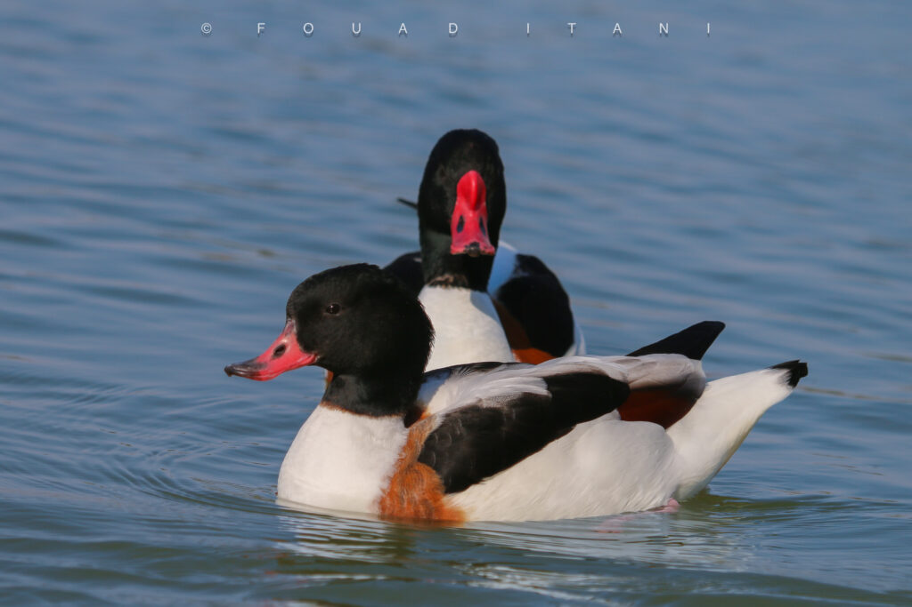

The Common Shelduck (Tadorna tadorna) is a scarce migrant and winter visitor to Lebanon’s wetlands, coasts, and islands — a protected Anatidae species that must never be treated as game.

The Common Shelduck (Tadorna tadorna; English: Common Shelduck) is known as a scarce migrant and wintering waterbird on wetlands, coasts, and islands in Lebanon. It belongs to the duck family Anatidae and is distinguished by its large size and well-balanced plumage of white, black, and chestnut-red. The male has a black head and neck with a glossy green sheen and a chestnut breast; the female is similar but with duller tones and a less prominent bill.
The Common Shelduck inhabits coastal areas, saline lakes, marshes, and ponds, preferring shallow muddy or sandy waters that suit its foraging. It is widespread across Europe and Asia and migrates to the Mediterranean and North Africa in winter.
Its breeding season begins in late spring and early summer. The female nests in ground burrows or rock crevices, often reusing abandoned burrows of other animals such as rabbits. She lays 8 to 12 eggs; incubation lasts 28 to 30 days. After hatching, she leads the young to water to teach them how to find food.

The Common Shelduck feeds on molluscs, crustaceans, worms, aquatic insects, aquatic plants, and algae, probing mud and sand with its flattened bill. It also plays an important ecological role by helping control crustacean and mollusc numbers and by improving water quality through stirring and aerating the substrate.
The species faces multiple threats, chiefly habitat destruction from urban expansion and coastal development, plus environmental pollution that degrades water quality and the plants it depends on. Illegal hunting is a further threat, alongside climate change that may alter its range and feeding areas.
The Common Shelduck is internationally protected under the Agreement on the Conservation of African-Eurasian Migratory Waterbirds (AEWA). It is not among the species permitted for hunting — a fact that calls for stronger protection of the bird and of its natural habitats so it can remain in the wild.